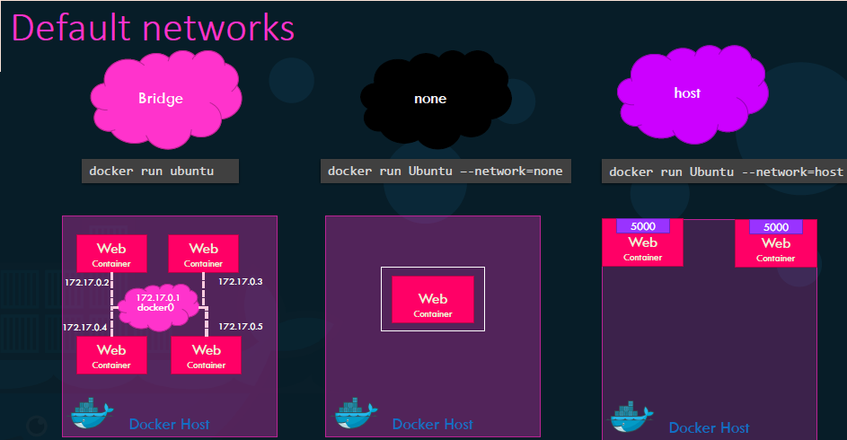
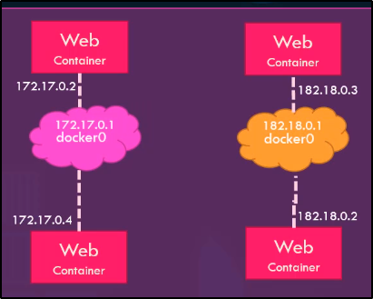

Su Docker esistono 3 tipi di rete di base:
Per specificare una rete differente da quella di base Bridged,
è possibile usare il parametro "--network"
Il Bridge Network è il network di default creato da Docker.
Crea una rete e range di IP che i container usano per comunicare tra loro.
Per portare questi container all'esterno, dobbiamo mappare una porta del Container con quella dell'Host.
Altro modo per esporre i Container è di usare la Host Network:
questo annulla qualsiasi isolamento dei Container (a livello di rete) e permette di esporre
I Container direttamente al mondo esterno.
La None Network semplicemente isola un container (Ottimo metodo di difesa di un container infetto?)

E se volessimo isolare i Container su reti separate?
Tipo cosi?

Di default, Docker crea un unica Internal Briged Network.
Possiamo creare una nostra rete con "network create"

Possiamo trovare tutte le opzioni di rete nella sezione "Networks" di un Container:


Inoltre, i container possono raggiungersi usano dei Domain Name.
I DOMAIN NAME VANNO USATI! GLI IP SVANISCONO, MA I DOMAIN NAME SONO PER SEMPRE CIT.
Quindim al posto di connettermi con un IP, digito il suo Domain Name.
Docker possiede inoltre possiede un DNS Server di default.
Il tutto come funziona?
Docker usa Network Name Spaces.
Docker crea un namespace separato per ogni container.
Poi utilizza Virtual Ethernete Pairs per collegare i container tra di loro.